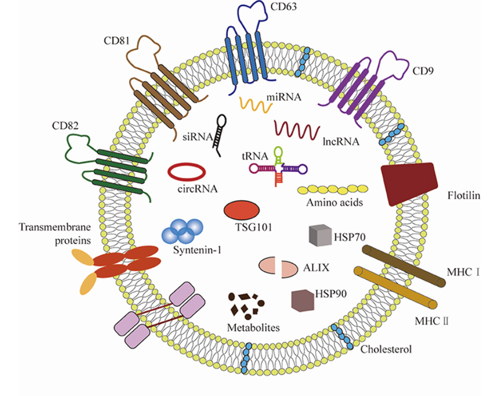
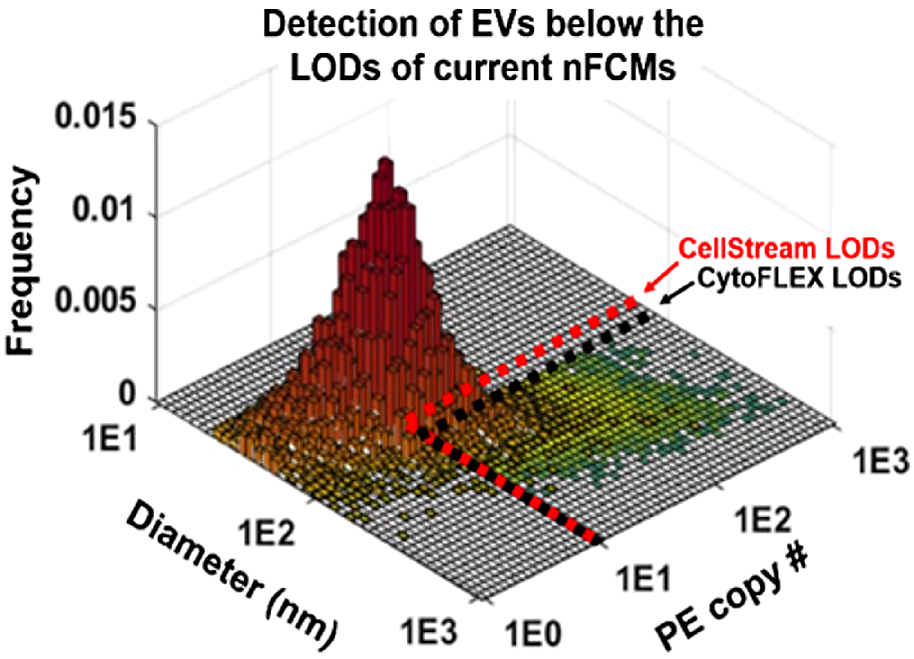
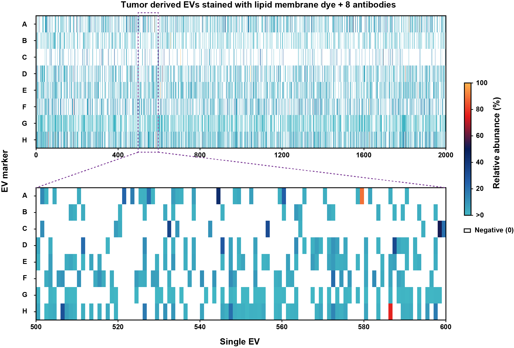
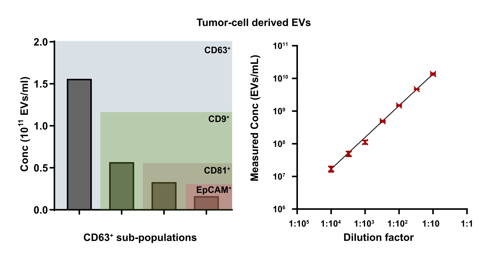

THE IMPORTANCE OF EVs

Xu et al. (2021) Front. Cardiovasc. Med.
Combination biomarkers
EVs carry multiplexed molecular signatures with potential utility for early cancer detection via liquid biopsy.

Uncover combination biomarker signatures for earlier cancer detection.

EVs carry multiplexed molecular signatures with potential utility for early cancer detection via liquid biopsy.
Most EVs are <100 nm—below the detection limits of conventional macrofluidic nanoscale flow cytometers.

100% single-fluorophore detection efficiency enables detection far below conventional limits.
See the publicationSINGLE-PARTICLE ANALYSIS
SINGLE-PARTICLE ANALYSIS
With 4 excitation lasers and 12 color channels, dFC can unmask the biological heterogeneity of biomedical nanoparticles such as EVs in a single experiment—down to the smallest nanoparticle.

SINGLE-PARTICLE ANALYSIS
Direct counting of fluorescent antibodies or EV subpopulations
By detecting every molecule that flows through the channel, dFC achieves absolute quantitation of the concentration of fluorescently-labeled biomolecules or EV subpopulations.

SINGLE-PARTICLE ANALYSIS
The ultra-high sensitivity of dFC enables single-molecule counting of protein and nucleic acid biomarker copy numbers associated with each EV—without external calibration.
A CLOSER LOOK